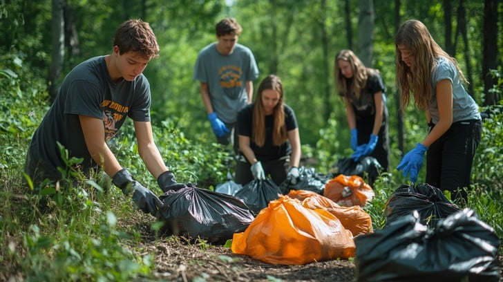
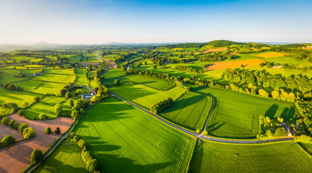
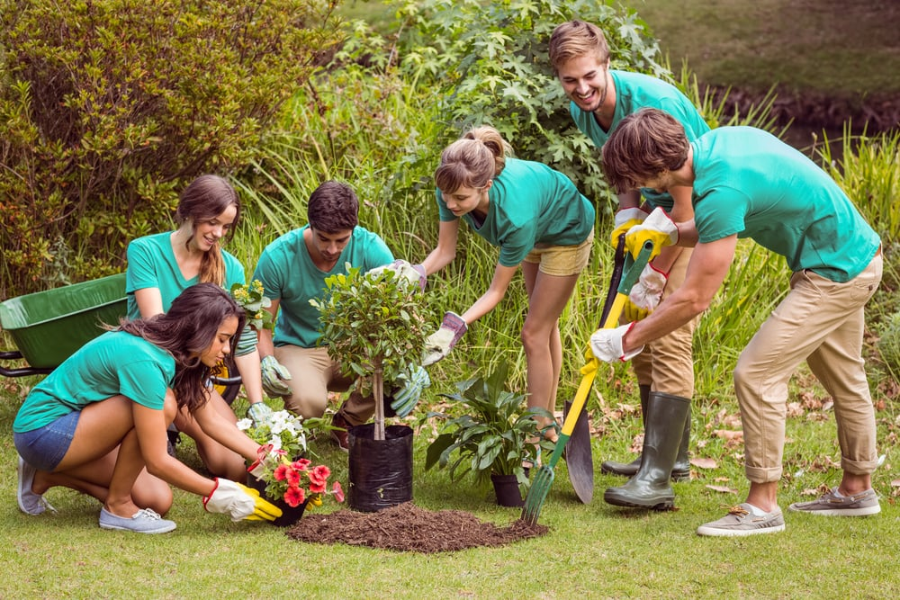
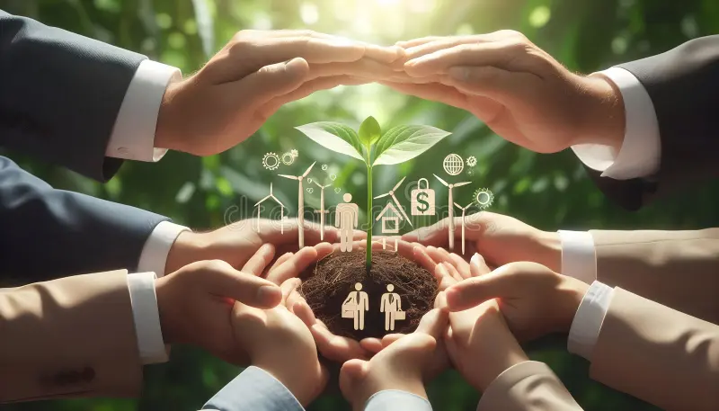
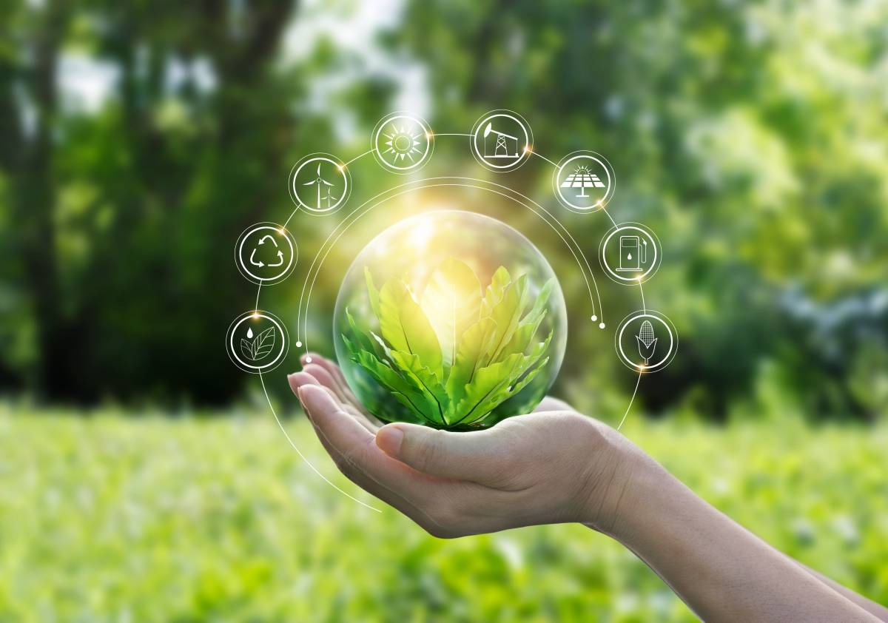
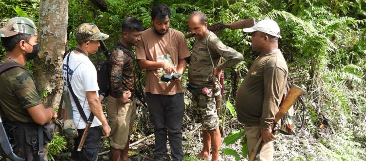

Why restoration matters
Land ecosystems support wildlife, food systems, water cycles, and climate balance. When
forests are removed, habitats are damaged, or waste is allowed to spread in natural spaces,
the effects go beyond appearance. Soil quality decreases, biodiversity falls, and
communities become more vulnerable to environmental problems.
Habitat restoration helps reduce some of this damage. It can include tree planting,
protecting green spaces, reducing waste, and encouraging people to treat land more
responsibly. These efforts are not limited to governments alone. Students, volunteers, and
local communities all have an important role.


Student actions that make sense
Students may not control national policies, but they can still create meaningful
environmental impact through awareness, projects, and visible local activities. Small
actions become stronger when they are organised well and repeated over time.
Three realistic actions
- Create a planting activity using native species.
- Run awareness campaigns about habitat loss and waste damage.
- Volunteer with local environmental and wildlife groups.
A one-time event can help, but long-term value comes from consistency. When action is
combined with awareness and follow-up, student projects become more effective and more
visible to the wider community.


Long-term thinking for SDG 15
Protecting life on land is not only about solving today’s visible problems. It is also about
making better decisions for the future. Long-term thinking means protecting biodiversity,
maintaining green spaces, and encouraging restoration projects that continue over time.
Students can help by supporting evidence-based awareness, documenting local issues, and
promoting practical campus solutions. Simple habits such as reducing waste, respecting green
spaces, and participating in credible environmental programmes all contribute to a stronger
culture of responsibility.
SDG 15 becomes more meaningful when people move from understanding the problem to taking
part in the solution. That is the purpose of this page: to encourage thoughtful, local, and
realistic action.

